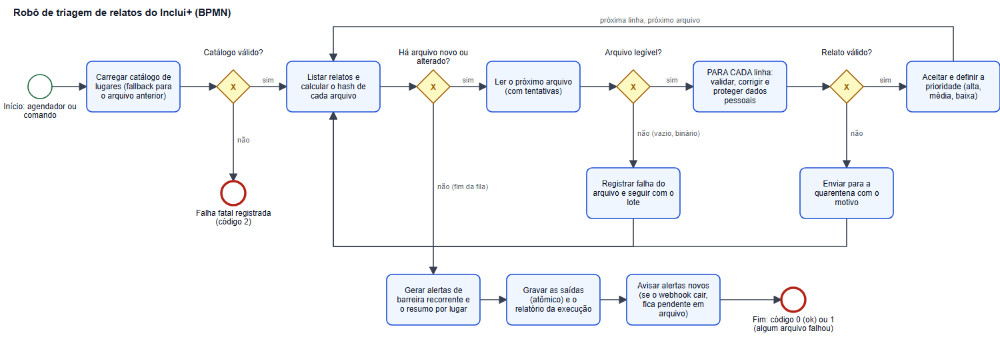
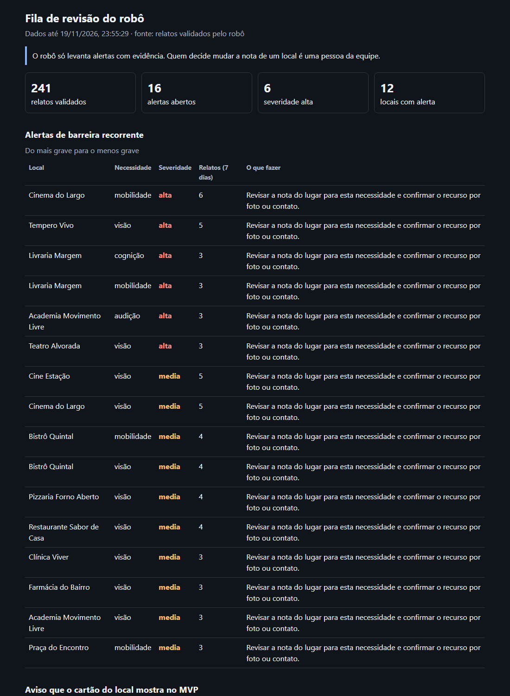

| Nome completo | RM |
|---|---|
| Kaiky Alvaro de Miranda | RM98118 |
| Bruno Eduardo Caputo Paulino | RM558303 |
| Juan Pinheiro de França | RM552202 |
| Lucas Rodrigues da Silva | RM98344 |
Inclui+: guia de lugares acessíveis em São Paulo, com nota separada por necessidade (mobilidade, visão, audição e cognição), fotos como evidência e um assistente em linguagem natural. Cidadão: pessoas com deficiência, acompanhantes e pessoas idosas. Problema: "acessível" não diz nada, e a pessoa só descobre a barreira quando chega à porta.
Os relatos de quem visitou o local mantêm as notas honestas, mas precisam ser conferidos: tem nota inválida, lugar inexistente, relato duplicado, arquivo quebrado, e um relato de barreira se perde no meio de dezenas de elogios. Hoje isso é manual e demora; a pessoa com deficiência continua indo a um local que o app diz ser acessível. Código e documentação: repositório do GS RPA (link na seção 14); produto: github.com/kaikyalvaro1708/inclui-gs.
Triar sozinho, todo dia, os relatos novos: validar, corrigir o que for possível, barrar o que estiver errado (com motivo), priorizar as barreiras, detectar lugares com barreira recorrente e entregar ao MVP dados limpos, sem dados pessoais, e uma fila de revisão para a equipe. Benefício: o intervalo entre "alguém relatou a barreira" e "a nota do local foi revisada" cai de dias para a mesma execução diária; a pessoa vê uma nota mais confiável e o aviso "relatos recentes de barreira" antes de sair de casa. O robô nunca altera nota sozinho: uma pessoa decide (IA responsável, pessoa no circuito).
Processo completo (PDD) em docs/PDD.md. Fluxo em BPMN 2.0 (arquivo docs/fluxo_bpmn.bpmn, editável no bpmn.io):

| # | Etapa |
|---|---|
| 1 | Carregar o catálogo de lugares (se o mais novo estiver corrompido, usa o anterior) |
| 2 | Listar os arquivos de relatos e calcular o SHA-256 de cada um: o que já foi processado é ignorado |
| 3 | Ler cada arquivo novo ou alterado (com tentativas); arquivo ruim é registrado e pulado |
| 4 | Para cada linha: validar, corrigir ou mandar para a quarentena; proteger dados pessoais |
| 5 | Definir a prioridade e gerar os alertas de barreira recorrente e o resumo por lugar |
| 6 | Gravar as saídas de forma atômica, avisar alertas novos e devolver o código de saída |
| Tecnologia | Por quê |
|---|---|
| Python 3.12, só biblioteca padrão | O processo é leitura de arquivos, regras e JSON, o formato que o pipeline de Big Data já entrega. Sem dependências, qualquer avaliador roda com um comando. Versionado e testável no Git. |
| JSON e JSON Lines | Contrato com o pipeline (entrada) e com o MVP (saída), legível por pessoas e por código. |
| unittest e node:test | 26 testes do robô e 6 de contrato com o MVP, sem instalar nada. |
| JavaScript (ES module) | Módulo relatosRpa.js no mesmo estilo do MVP, que é um site estático sem backend. |
| BPMN 2.0 | Padrão aberto para o fluxo; gerado por script para o desenho e o arquivo editável nunca divergirem. |
| Webhook Discord/Slack (opcional) | Aviso de alerta novo, com tentativas e pendência em arquivo se estiver fora do ar. |
Não foi usada ferramenta de tela (UiPath, Power Automate): onde existe arquivo estruturado e API, um robô de tela seria mais lento, frágil e difícil de auditar.
| Regra | Decisão |
|---|---|
| Validação (estrutura de decisão por linha) | id, data, lugar no catálogo, necessidade, tipo, nota 1 a 5. Corrige " Vision", nota "4" e data sem fuso; o resto vai para a quarentena com motivo fixo. |
| Duplicidade | Mesmo relato_id: fica o primeiro, o repetido vai para a quarentena. |
| Prioridade | Elogio: baixa. Barreira nota 1-2: alta. Nota 3: média (alta com 2 ou mais fotos). Nota 4-5: baixa (provável erro de preenchimento). |
| Alerta de barreira recorrente | 3 ou mais relatos média/alta do mesmo lugar e da mesma necessidade em 7 dias. Severidade alta com 3 ou mais de prioridade alta. Status inicial pendente_revisao. |
| Incremental e idempotente | Hash por arquivo. Arquivo novo entra; já processado é ignorado; reeditado substitui só o que era dele. Reexecutar gera a mesma saída, byte a byte. |
Resultado nos dados reais (7 arquivos de 12 a 19/11/2026, gerados pelo pipeline de Big Data): 258 linhas, 241 relatos aceitos e 17 na quarentena; prioridades 79 alta, 42 média e 120 baixa; 16 alertas de barreira recorrente.
| Motivo da quarentena | Linhas |
|---|---|
sem_data_hora | 7 |
nota_nao_numerica | 3 |
duplicado | 3 |
nota_fora_da_faixa | 2 |
lugar_inexistente | 2 |
Os relatos são simulados e documentados (o MVP não tem backend e dados reais de pessoas com deficiência são sensíveis). Conclusões sobre os relatos são ilustrativas, não evidência.
| Falha prevista | Recuperação ou registro |
|---|---|
| Arquivo travado (leitura transitória) | Até 3 tentativas com espera crescente; cada tentativa vai para o log. |
| Arquivo vazio ou codificação quebrada | Registra, pula só esse arquivo, processa o resto e sai com código 1 (parcial). Quando o arquivo for corrigido, é processado na execução seguinte. |
| Linha com JSON quebrado | Quarentena; o resto do arquivo segue. |
| Catálogo mais novo corrompido | Usa o anterior e registra qual usou. |
| Sem catálogo ou sem pasta de relatos | Falha fatal registrada (código 2). |
| Estado interno corrompido | Reconstrói a partir dos arquivos de entrada. |
| Webhook fora do ar (API externa) | 3 tentativas; depois grava em notificacoes_pendentes.jsonl e segue. |
| Erro inesperado | Rede de segurança final: log com a pilha, auditoria e código 2. Nenhuma falha é silenciosa. |
CENÁRIO 4 - FALHAS (arquivo vazio, arquivo binário, linha quebrada, catálogo mais novo corrompido) ============================================================================== | INFO | Início da execução 20261118T231518 | WARNING | RPA_SAL_LGPD_SECRET ausente: usando sal de desenvolvimento (defina o sal real em produção) | INFO | Catálogo carregado: 20 lugares (lugares_2026-11-19.jsonl) | INFO | Processado relatos_2026-11-12.jsonl: 33 aceitos, 4 na quarentena | INFO | Processado relatos_2026-11-13.jsonl: 33 aceitos, 2 na quarentena | INFO | Processado relatos_2026-11-14.jsonl: 35 aceitos, 4 na quarentena | INFO | Processado relatos_2026-11-15.jsonl: 32 aceitos, 1 na quarentena | INFO | Processado relatos_2026-11-16.jsonl: 39 aceitos, 2 na quarentena | INFO | Processado relatos_2026-11-17.jsonl: 28 aceitos, 2 na quarentena | ERROR | Falha ao processar relatos_2026-11-18.jsonl (arquivo_vazio): arquivo pulado, o restante do lote segue | INFO | Processado relatos_2026-11-19.jsonl: 41 aceitos, 3 na quarentena | ERROR | Falha ao processar relatos_2026-11-20.jsonl (codificacao_invalida): arquivo pulado, o restante do lote segue | INFO | Saídas gravadas em saida: 241 relatos, 16 alertas, 18 na quarentena | INFO | [ALERTA] Inclui+ RPA: 16 alerta(s) novo(s) de barreira recorrente | INFO | [ALERTA] - Cinema do Largo (mobility): 6 relatos, severidade alta | INFO | [ALERTA] - Tempero Vivo (vision): 5 relatos, severidade alta | INFO | [ALERTA] - Livraria Margem (cognitive): 3 relatos, severidade alta | INFO | [ALERTA] - Livraria Margem (mobility): 3 relatos, severidade alta | INFO | [ALERTA] - Academia Movimento Livre (hearing): 3 relatos, severidade alta | INFO | [ALERTA] - Teatro Alvorada (vision): 3 relatos, severidade alta | INFO | [ALERTA] - Cine Estação (vision): 5 relatos, severidade media | INFO | [ALERTA] - Cinema do Largo (vision): 5 relatos, severidade media | INFO | [ALERTA] - Bistrô Quintal (mobility): 4 relatos, severidade media | INFO | [ALERTA] - Bistrô Quintal (vision): 4 relatos, severidade media | INFO | Fim da execução 20261118T231518: status=parcial, 259 linhas lidas, 241 aceitos, 18 rejeitados, 16 alertas novos [código de saída: 1]
logs/rpa.log (legível) e logs/auditoria.jsonl (um evento JSON por passo, com data/hora, execução, itens processados, sucessos e falhas). Nenhum log recebe nome, e-mail ou texto de relato.
CENÁRIO 1 - SUCESSO, LOTE 1 (3 primeiros arquivos) ============================================================================== | INFO | Início da execução 20261118T231517 | WARNING | RPA_SAL_LGPD_SECRET ausente: usando sal de desenvolvimento (defina o sal real em produção) | INFO | Catálogo carregado: 20 lugares (lugares_2026-11-19.jsonl) | INFO | Processado relatos_2026-11-12.jsonl: 33 aceitos, 4 na quarentena | INFO | Processado relatos_2026-11-13.jsonl: 33 aceitos, 2 na quarentena | INFO | Processado relatos_2026-11-14.jsonl: 35 aceitos, 4 na quarentena | INFO | Limite de 3 arquivo(s) por execução atingido: relatos_2026-11-15.jsonl fica para a próxima | INFO | Limite de 3 arquivo(s) por execução atingido: relatos_2026-11-16.jsonl fica para a próxima | INFO | Limite de 3 arquivo(s) por execução atingido: relatos_2026-11-17.jsonl fica para a próxima | INFO | Limite de 3 arquivo(s) por execução atingido: relatos_2026-11-19.jsonl fica para a próxima | INFO | Saídas gravadas em saida: 101 relatos, 1 alertas, 10 na quarentena | INFO | [ALERTA] Inclui+ RPA: 1 alerta(s) novo(s) de barreira recorrente | INFO | [ALERTA] - Tempero Vivo (vision): 3 relatos, severidade alta | INFO | Fim da execução 20261118T231517: status=ok, 111 linhas lidas, 101 aceitos, 10 rejeitados, 1 alertas novos [código de saída: 0]
CENÁRIO 2 - SUCESSO, LOTE 2 (só os arquivos novos entram) ============================================================================== | INFO | Início da execução 20261118T231517 | WARNING | RPA_SAL_LGPD_SECRET ausente: usando sal de desenvolvimento (defina o sal real em produção) | INFO | Catálogo carregado: 20 lugares (lugares_2026-11-19.jsonl) | INFO | Ignorado (já processado, mesmo conteúdo): relatos_2026-11-12.jsonl | INFO | Ignorado (já processado, mesmo conteúdo): relatos_2026-11-13.jsonl | INFO | Ignorado (já processado, mesmo conteúdo): relatos_2026-11-14.jsonl | INFO | Processado relatos_2026-11-15.jsonl: 32 aceitos, 1 na quarentena | INFO | Processado relatos_2026-11-16.jsonl: 39 aceitos, 1 na quarentena | INFO | Processado relatos_2026-11-17.jsonl: 28 aceitos, 2 na quarentena | INFO | Processado relatos_2026-11-19.jsonl: 41 aceitos, 3 na quarentena | INFO | Saídas gravadas em saida: 241 relatos, 16 alertas, 17 na quarentena | INFO | [ALERTA] Inclui+ RPA: 15 alerta(s) novo(s) de barreira recorrente | INFO | [ALERTA] - Cinema do Largo (mobility): 6 relatos, severidade alta | INFO | [ALERTA] - Livraria Margem (cognitive): 3 relatos, severidade alta | INFO | [ALERTA] - Livraria Margem (mobility): 3 relatos, severidade alta | INFO | [ALERTA] - Academia Movimento Livre (hearing): 3 relatos, severidade alta | INFO | [ALERTA] - Teatro Alvorada (vision): 3 relatos, severidade alta | INFO | [ALERTA] - Cine Estação (vision): 5 relatos, severidade media | INFO | [ALERTA] - Cinema do Largo (vision): 5 relatos, severidade media | INFO | [ALERTA] - Bistrô Quintal (mobility): 4 relatos, severidade media | INFO | [ALERTA] - Bistrô Quintal (vision): 4 relatos, severidade media | INFO | [ALERTA] - Pizzaria Forno Aberto (vision): 4 relatos, severidade media | INFO | Fim da execução 20261118T231517: status=ok, 147 linhas lidas, 140 aceitos, 7 rejeitados, 15 alertas novos [código de saída: 0]
CENÁRIO 3 - REEXECUÇÃO (nada novo: nada duplica) ============================================================================== | INFO | Início da execução 20261118T231518 | WARNING | RPA_SAL_LGPD_SECRET ausente: usando sal de desenvolvimento (defina o sal real em produção) | INFO | Catálogo carregado: 20 lugares (lugares_2026-11-19.jsonl) | INFO | Ignorado (já processado, mesmo conteúdo): relatos_2026-11-12.jsonl | INFO | Ignorado (já processado, mesmo conteúdo): relatos_2026-11-13.jsonl | INFO | Ignorado (já processado, mesmo conteúdo): relatos_2026-11-14.jsonl | INFO | Ignorado (já processado, mesmo conteúdo): relatos_2026-11-15.jsonl | INFO | Ignorado (já processado, mesmo conteúdo): relatos_2026-11-16.jsonl | INFO | Ignorado (já processado, mesmo conteúdo): relatos_2026-11-17.jsonl | INFO | Ignorado (já processado, mesmo conteúdo): relatos_2026-11-19.jsonl | INFO | Saídas gravadas em saida: 241 relatos, 16 alertas, 17 na quarentena | INFO | Fim da execução 20261118T231518: status=ok, 0 linhas lidas, 0 aceitos, 0 rejeitados, 0 alertas novos [código de saída: 0]
{"ts": "2026-11-18T23:15:17-03:00", "execucao": "20261118T231517", "evento": "inicio", "entrada": "entrada", "reprocessar": false}
{"ts": "2026-11-18T23:15:17-03:00", "execucao": "20261118T231517", "evento": "aviso_sal_lgpd_ausente"}
{"ts": "2026-11-18T23:15:17-03:00", "execucao": "20261118T231517", "evento": "catalogo_carregado", "lugares": 20, "arquivo": "lugares_2026-11-19.jsonl"}
{"ts": "2026-11-18T23:15:17-03:00", "execucao": "20261118T231517", "evento": "arquivo_processado", "arquivo": "relatos_2026-11-12.jsonl", "aceitos": 33, "quarentena": 4}
{"ts": "2026-11-18T23:15:17-03:00", "execucao": "20261118T231517", "evento": "arquivo_processado", "arquivo": "relatos_2026-11-13.jsonl", "aceitos": 33, "quarentena": 2}
{"ts": "2026-11-18T23:15:17-03:00", "execucao": "20261118T231517", "evento": "arquivo_processado", "arquivo": "relatos_2026-11-14.jsonl", "aceitos": 35, "quarentena": 4}
relatorio_execucao.json){
"status": "parcial",
"arquivos": {
"com_falha": [
{
"arquivo": "relatos_2026-11-18.jsonl",
"motivo": "arquivo_vazio"
},
{
"arquivo": "relatos_2026-11-20.jsonl",
"motivo": "codificacao_invalida"
}
],
"encontrados": 9,
"ignorados_ja_processados": 0,
"processados": 7
},
"linhas_lidas": 259,
"rejeitados_por_motivo": {
"duplicado": 3,
"linha_json_invalida": 1,
"lugar_inexistente": 2,
"nota_fora_da_faixa": 2,
"nota_nao_numerica": 3,
"sem_data_hora": 7
},
"correcoes_automaticas": {
"necessidade_normalizada": 1
},
"avisos": {
"email_invalido_autor_descartado": 2
},
"alertas_total": 16
}
O robô grava em saida/ um contrato JSON versionado: resumo_lugares.json e alertas_prioritarios.json (consumidos pelo MVP), relatos_validados.json (também pode alimentar a camada Bronze do Big Data),
quarentena.jsonl e relatorio_execucao.json. O MVP é um site estático, então consome os JSON publicados junto do site pelo módulo relatosRpa.js
(loadRpaData, placeNotice, reviewQueue). Se os arquivos não existirem, o site segue normal. A cadeia completa é: Airflow (Big Data) → chegada/ → robô RPA → saida/ → MVP e painel.

Painel de revisão (integracao_mvp/painel.html) lendo os arquivos gerados pelo robô: 241 relatos validados, 16 alertas, a fila ordenada por severidade e o aviso que o cartão do local mostra.
✔ carrega os arquivos reais gerados pelo robô (8.7698ms) ✔ lugar com alerta mostra aviso do nível alert, filtrado pela necessidade (3.7221ms) ✔ lugar desconhecido ou sem relatos não gera aviso (2.5258ms) ✔ fila de revisão vem ordenada da severidade mais alta para a menor (1.9665ms) ✔ se o robô não gerou arquivos, o MVP segue sem quebrar (0.9543ms) ✔ os arquivos não carregam dado pessoal (4.1914ms) ℹ tests 6 ℹ pass 6 ℹ fail 0
| Tipo | Cenários |
|---|---|
| Sucesso | Processa e grava as saídas; dois lotes (só o novo entra); reexecução byte a byte igual; limite de arquivos por execução; arquivo reeditado sem relato fantasma; auditoria com data/hora e contagens. |
| Decisão | Prioridade (6 casos); alerta só com 3 relatos; necessidades diferentes não somam; elogio não conta; relatos fora da janela de 7 dias não contam; correção versus rejeição; e-mail inválido não derruba o relato. |
| Falha | Linhas quebradas e duplicadas; arquivo vazio e binário (código 1); arquivo corrigido depois é reprocessado; catálogo corrompido (fallback); sem catálogo e sem pasta (código 2); estado corrompido; leitura transitória com nova tentativa; webhook fora do ar. |
Ran 26 tests in 1.065s OK
Execução: PYTHONPATH=src python -m unittest discover -s tests -v (26 testes) e node --test integracao_mvp/relatosRpa.test.js (6 testes). Saídas completas em tests/evidencias/.
.env está no .gitignore; o webhook nunca aparece em log (há teste).autor_hash (SHA-256 com sal, 16 caracteres), que permite contar autores distintos sem identificar ninguém.example.com.ODS: 10 (redução das desigualdades, meta 10.2), 11 (cidades inclusivas, metas 11.2 e 11.7), 9 (infraestrutura e inovação) e 3 (acesso a serviços de saúde sem barreira).
config.py; deve ser calibrada com dados reais.export PYTHONPATH=src # PowerShell: $env:PYTHONPATH = 'src' python scripts/demo.py # 4 cenários: sucesso, lotes, reexecução, falhas python -m unittest discover -s tests -v # 26 testes node --test integracao_mvp/relatosRpa.test.js python -m http.server 8000 # painel em http://localhost:8000/integracao_mvp/painel.html
| Item | Link |
|---|---|
| Repositório GitHub do GS RPA (público) | https://github.com/JuanPinheiroFIAP/GS-RPA |
| Vídeo demonstrativo (até 3 min) | https://github.com/JuanPinheiroFIAP/GS-RPA/blob/main/video/demo_rpa.mp4 (arquivo no repositório, via Git LFS) |
| Repositório do MVP | https://github.com/kaikyalvaro1708/inclui-gs |
| MVP publicado | https://d3ls3zp8wqbtsw.cloudfront.net |